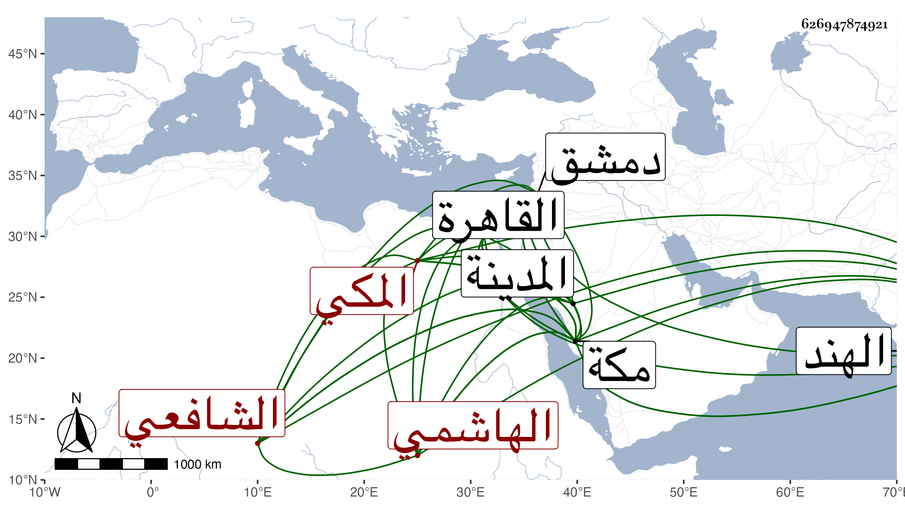

0902Sakhawi.DawLamic.ITO20230111-ara1.EIS1600.626947874921
Biography ID: 626947874921
428
أبو القسم بن أحمد بن محمد بن محمد بن محمد بن محمد بن عبد الله بن محمد بن فهد الشرف محمد بن المحب أبي بكر بن التقي الهاشمي المكي الشافعي شقيق عبد الرحمن ووالد عبد الرحمن الماضيين وأبوه وجده ويعرف كسلفه بابن فهد ولد في عشاء ليلة السبت ثاني عشر ربيع الأول سنة ست وأربعين وثمانمائة بمكة ونشأ بها فحفظ القرآن وأربعي النووي والتنبيه وألفية النحو وجل ألفية الحديث أو جميعها وعرض على جماعة وأحضره عمه النجم عمر على غير واحد بل أسمعه الكثير معي في سنة ست وخمسين ثم مع غيري بعدها وأجاز له جماعة وارتحل إلى القاهرة ودمشق وغيرهما فسمع من طائفة واشتغل بمكة على الزين خطاب في الفقه والعربية وغيرهما وعلى إمام الكاملية والجوجرى وقرأ عليه شرحه للشذور وأذن له في النحو ولازم القاضي وأخاه الفخري وسافر إلى بلاد الهند وغيرها وكان معه فتح الباري بخط أبيه فقدمه لبعض ملوكهم واستغرق هناك ومشى على طريقة الصالحين وساعده كرم أصله وفتوته ورسائله واردة على أبيه وعمه ثم على ابن عمه وأنه في خير وبركة ثم بلغنا أن داره نهبت في فتنة هناك وتألم السلطان لهذا وأمر بنهب من نسب له ذلك ولما كنت هناك بعد الثمانين أرسل يطلب منه القول البديع وغيره من تصانيفي فجهزها له وعاد إلى مكة بعد التسعين ومعه زوجته التي اتصل بها هناك فحج وزار المدينة النبوية ثم رجع لانتظام أمره هناك وكون له في اليوم دينار بعد أن سمع مني أشياء من تصانيفي وغيرها بل وكتب بعض ذلك وكتب له عمه فهرستا لبعض مروياته ثم ابن عمه أربعين من المسلسلات . وهو ظريف فطن لبيب خفيف الروح جيد الفهم وأظنه ينظم الشعر .
